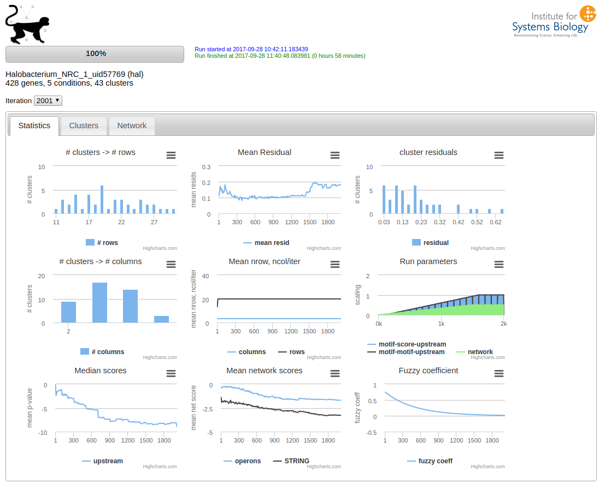

Quick Start¶
After installing the cmonkey2 package and ensuring that MEME is installed and in the search path, download the example data. This is a simple gene expression matrix in the format that cmonkey2 expects.
cmonkey2 --organism hal --rsat_base_url http://networks.systemsbiology.net/rsat halo_ratios5.tsv
If everything is installed correctly, cmonkey2 will now take some time until the run finishes.
You can see the progress of your run by running
cm2view
in the same directory as you started the run. This will start the web application “cmonkey2 viewer”, which can be accessed at the default address http://localhost:8080. The browser should display something similar to this:
